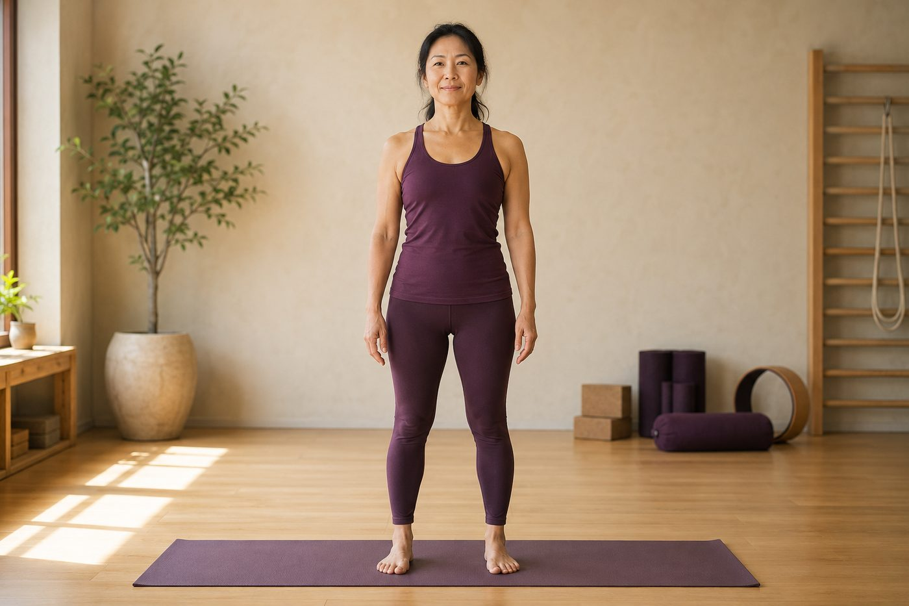

倒立、深後彎那種進階體式，你需要追求嗎？

打開手機，滿滿都是有人靠牆倒立、後彎彎成一個圓、單手撐地把整個身體抬起來的畫面。你一邊滑一邊想：是不是要練到那樣，才算真的會瑜伽？先給你一個老實的結論——如果你的目標是改善久坐、圓肩、把歪掉的體態調回來，那些高難度動作你不但不需要，急著追還可能扣分。
先講一句老實話：進階體式跟「改善體態」是兩件事
我們很習慣把「瑜伽練得好」和「能做出高難度動作」畫上等號，但這兩件事其實走在不同的軌道上。倒立、深後彎、手平衡這類進階體式，練的是極端的關節活動度、肌力和平衡的整合，本質上是一種「能力的展示」——它需要你先有很厚的基礎，才撐得起來。
而「改善體態」練的是另一件事：把長期被拉長、變弱的肌群重新叫回來工作，像撐開肩胛的下斜方肌、菱形肌，還有久坐睡著的臀大肌；同時把縮短、變緊的地方鬆開，像把肩膀往前拉的胸小肌、坐久了緊繃的髂腰肌。這是一個「找回平衡、重新學會用對肌肉」的過程，跟「挑戰極限」的方向，其實不太一樣。
所以當你問「我需不需要練到倒立」，真正要先問的是：你想要的到底是什麼？如果是體態，那答案很清楚——不需要。
進階體式是「地基蓋好之後的風景」，不是「拿來蓋地基的工具」；對改善體態來說，它從來不是必經之路。
為什麼「你最想改善的」，正好讓你「最不該急著做進階」
這裡有一個有點反直覺的地方：越是久坐、圓肩、體態需要調整的人，越不適合現在就衝進階體式。因為這些動作要做得安全，前提剛好是你現在還沒建立好的那些能力。
- 倒立：全身重量壓在頸椎和手腕上，要靠前鋸肌、下斜方肌把肩胛穩住。可是圓肩族的肩胛本來就不太穩，這等於在一個會晃的地基上，再疊上整個人的重量。
- 深後彎（像輪式、駱駝式）：需要胸椎能延展、臀大肌用得上力、髖前側的髂腰肌夠鬆。但久坐的人常常髂腰肌緊、臀大肌弱、胸椎又僵，硬做的結果，是整個彎全塞進腰椎，下背痛就是這樣來的。
- 手平衡（像烏鴉式）：手腕、肩膀、核心全都在高負荷下工作，手腕還沒準備好就上，很容易拉傷。
你有沒有發現，這幾個動作的門檻，剛好都是你正在努力找回來的東西——穩定的肩胛、會出力的臀、鬆得開的髖。與其硬做，不如先把觀念搞懂，後彎不是折腰、下背會痛常是臀部沒出力，這一篇會讓你更明白力氣該從哪裡來。
社群餵給你的，其實是「倖存者偏差」
那為什麼我們會覺得「沒練到那樣就不算數」？因為演算法偏愛看起來厲害的畫面。你在手機裡看到的，是別人練了好幾年之後的「結果」，不是他們每天無聊地重複練地基的那 99% 過程。你拿自己的第一步，去比別人的第一百步，當然會覺得自己差很遠。
還有一個很少人講的真相：很多能輕鬆擺出漂亮後彎、劈腿的人，其實是先天關節活動度比較大（也就是俗稱的「天生軟」）。這對擺出好看的動作很有利，但對「關節穩定」反而是弱項——他們更需要練的是控制，不是幅度。所以你羨慕的那個畫面，未必適合你，甚至是你該小心的方向。
說到底，難度不等於有效。一個靠腰椎代償硬凹出來的輪式，對你的體態是扣分的；一個對齊做對、幅度不大的溫和開胸，才是真正在幫你。這也是為什麼我們一直說，做到位比做得深更重要——尤其當你的目標是把身體調回正位的時候。
這也是壁繩很好用的地方。它給你支撐和借力，讓你在有安全網的狀態下，去練那些「真正對體態有用」的基本動作——有牆繩托著的溫和後彎、有支撐的開胸，你可以把注意力放在「讓對的肌肉出力」，而不是靠一股蠻力硬撐。所以會不會進階根本不是重點，能不能在支撐下，把基本動作一次比一次做對，才是。
與其追一張倒立照，不如先看清楚自己的肩胛和骨盆
AI 體態檢測在教室現場做，用影像幫你看出圓肩、骨盆前傾、左右不對稱到了什麼程度，讓你把力氣花在真正需要調整的地方，而不是盲目挑戰難度。
預約首次 NT$199 AI 體態檢測今天可以先記住的一件事
不是說進階體式不好，更不是說你這輩子都不能碰。而是——它不該是你現在的重點，也不是入門的必經之路。把目標從「做出厲害的動作」換成「用對肌肉、把基本動作做對」，你反而會進步得更快、更安全。
可以先從幾件事開始：站姿把腳掌踩穩、練習開胸讓縮短的胸前鬆開、學會摺髖而不是彎腰、讓核心和臀部重新醒過來。這些看起來不起眼，卻是真正在改變你體態的動作。等哪天基礎穩了、身邊也有專業陪著，想挑戰進階當然可以——那時候是水到渠成，不是揠苗助長。慢慢來，比較快。
本頁為體態與姿勢的一般衛教與練習分享，非醫療診斷或治療。若有疼痛、舊傷或特殊病史，請先諮詢合格醫療專業人員。